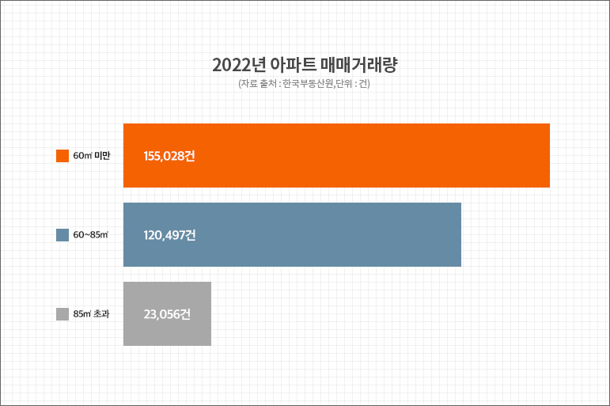

부동산 시장 훈풍 속에서 이전과 다른 분위기가 감지되고 있습니다. 바로 국민평형으로 불리는 전용면적 84㎡가 포함된 중형 아파트의 인기를 전용 60㎡ 미만 소형 아파트가 따라잡고 있는 것인데요.
부동산 시장 훈풍 속에서 이전과 다른 분위기가 감지되고 있습니다. 바로 국민평형으로 불리는 전용면적 84㎡가 포함된 중형 아파트의 인기를 전용 60㎡ 미만 소형 아파트가 따라잡고 있는 것인데요.
최근 사례로 알아볼까요? 최근 서울 동대문구에서 분양한 ‘휘경자이 디센시아’는 1순위 청약에서 39㎡ 타입 10명 모집에 822명이 몰려 82.2대 1의 경쟁률을 기록했습니다.
지난 2월 경기도 수원시 팔달구에서 분양한 ‘수원성 중흥S-클래스’는 다양한 타입 가운데 가장 작은 크기인 전용 49㎡, 59㎡ 타입이 단기간 완판을 알리기도 했죠.
이 단지의 중대형 타입은 아직 선착순 분양 중입니다. 또한 서울 강동구 ‘올림픽파크 포레온(둔촌주공)’은 지난 달 진행된 무순위 청약에서 전용 29∼49㎡ 899가구 모집에 총 4만1540건이 접수돼 46.2대 1의 경쟁률을 기록했으며, 완판으로 이어졌습니다.
소형 아파트를 선호하는 분위기는 이전부터 감지되기 시작했습니다. 한국부동산원 자료를 분석해보니, 지난해 전국 아파트 매매 거래 총 29만8,581건 가운데 절반이 넘는 15만5,028건이 전용면적 60㎡ 미만의 소형 아파트인 것으로 나타났습니다.
자료를 좀 더 자세히 살펴보면, 전용 40㎡초과 60㎡미만 아파트 매입비중은 40.83%(12만1,897건)으로 2년 연속 증가했습니다.
40㎡ 이하 아파트 매입비중은 11.1%(3만3,131건)로 통계조사가 시작된 2006년 이후 가장 높은 수치를 기록했는데요. 반면 60㎡ 이상 아파트 매입비중은 2년 연속 감소세입니다.
치솟는 소형 아파트 인기, 진짜 이유는?
이제는 소형 아파트가 인기를 끄는 진짜 이유가 무엇일지 살펴봅시다.
먼저 1~2인 소형가구가 증가하면서 소형 면적 선호도가 높아진 것으로 해석됩니다. 통계청 인구총조사에 따르면, 2021년 기준 전국의 가구 수는 2144만8463가구로 집계됐습니다. 이 중 1인 가구가 716만5788가구(33.41%)로 가장 많은 비중을 차지했으며, 2인 가구도 607만6549가구(28.33%)로 뒤를 이었습니다. 10가구 중 6가구는 1~2인 가구 인 것이지요. 1~2인가구가 1046만4781명이었던 5년 전 과 비교했을 때에는 26.54%가 증가한 수치입니다.

금리 폭등도 소형 아파트가 중대형 아파트보다 거래가 많아진 이유로 볼 수 있습니다. 한국은행이 지난해 4월부터 올해 1월까지 1년 반 동안 기준금리를 7연속 인상하면서, 0.5%에 머물렀던 기준금리가 현재 3.5% 수준으로 올라왔습니다. 금리 인상이 지속되면서 시장에서는 상대적으로 자금 부담이 적은 소형 아파트 중심으로 거래가 이뤄진 것이죠. 또한 소형 아파트의 설계구조의 진화가 거듭되면서 중형 아파트 못지 않은 공간활용으로 실거주 만족도가 높게 나타나고 있다는 점도 인기에 힘을 싣고 있습니다.
그렇다면 앞으로 전망은 어떨까요? 업계는 시장에서 소형 아파트에 대한 관심이 더욱 커질 것이라고 전망하고 있습니다. 올해 초 정부가 부동산 규제를 대폭 완화하면서 실수요부터 투자수요까지 주택 구입의 진입장벽이 낮아졌기 때문인데요. 분양 시장에서는 분양가나 인당 대출 한도와 관계없이 중도금 대출이 가능해지고, 민간분양 청약제도에서 추첨제 비율이 늘어나면서 자금력이 부족하거나 가점이 낮은 청년들도 청약통장을 다시 꺼내들 수 있는 환경이 마련됐습니다. 여기에 전매제한 완화, 1주택 청약당첨자의 기존 주택 처분 의무 폐지 등이 더해지면서 현금을 보유하고 있는 다주택자들을 중심으로 주택거래가 활성화될 가능성도 높습니다. 특히 소형 아파트의 경우 월세 거래가 역대 최고를 기록하는 등 수요가 늘어나고 있어 임대 수익을 창출하려는 투자자들이 눈독을 들이고 있는 상황입니다.
실제로 지난해 매매나 전세에 부담을 느낀 수요자들이 월세시장으로 이동하면서 소형 아파트 월세 거래량이 크게 올랐습니다. 부동산R114 자료를 분석하니 수도권 전용면적 60㎡ 이하 아파트의 월세 거래량은 지난해 7만8,874건을 기록했는데요. 이는 전년 거래 건 수 5만2,946건 대비 43.69% 늘어난 수치이며, 관련 통계 작성이 시작된 2010년 이후 역대 최고치라고 합니다.
공급 줄어드는 소형 아파트… 신규 분양 주목해야
소형 아파트 수요가 증가하고 있는 것과 달리 분양 시장에서는 공급이 줄어들고 있어 새로 분양하는 소형 아파트에 관심이 집중될 수밖에 없는 상황입니다. 지난해 분양한 전용 60㎡ 이하 소형 아파트는 1만8662가구(일반분양 기준)로 전년(2만6724가구) 대비 약 30.17%나 감소했습니다. 이러한 상황 속에서 이달 경기도 광명시에서 분양하는 ‘광명자이더샵포레나’가 실수요자는 물론 투자자들의 관심까지 한 몸에 받고 있습니다. 서울 구로구와 금천구가 맞닿아 있는 서울 생활권 지역인데다, 가산디지털단지, 구로디지털단지응 비롯해 주요 업무지구가 가까워 소형 가구 수요가 많기 때문이죠.
이 단지는 지하 3층~지상 38층 28개 동 총 3585가구 규모이며, 전용면적 39~112㎡ 809가구가 일반에 분양됩니다. 여기서 주목할 점은 일반분양 물량이 최근 수요가 많아진 39, 49㎡의 소형타입 위주로 구성된다는 점입니다. 특히 39㎡ 타입의 경우, 원룸형, 1.5룸형 등 답답했던 과거 평면설계에서 벗어나 방 2개에 거실과 주방이 별도로 마련된 투룸형 구조로 설계해 쾌적성과 공간 활용을 극대화시킨 것이 특징이라고 합니다.
49㎡ 타입은 주방과 거실 창문이 마주보고 있어 맞통풍이 가능하고, 드레스룸과 다용도실 등 수납공간도 넉넉히 마련될 예정이네요. 광명자이더샵포레나는 대단지 규모에 걸맞게
피트니스센터, GX룸, 실내골프연습장, 사우나, 도서관 등 다양한 커뮤니티 시설이 들어설 계획으로 단지 내에서도 효율적으로 여가시간을 보낼 수 있는 것으로 보여집니다.